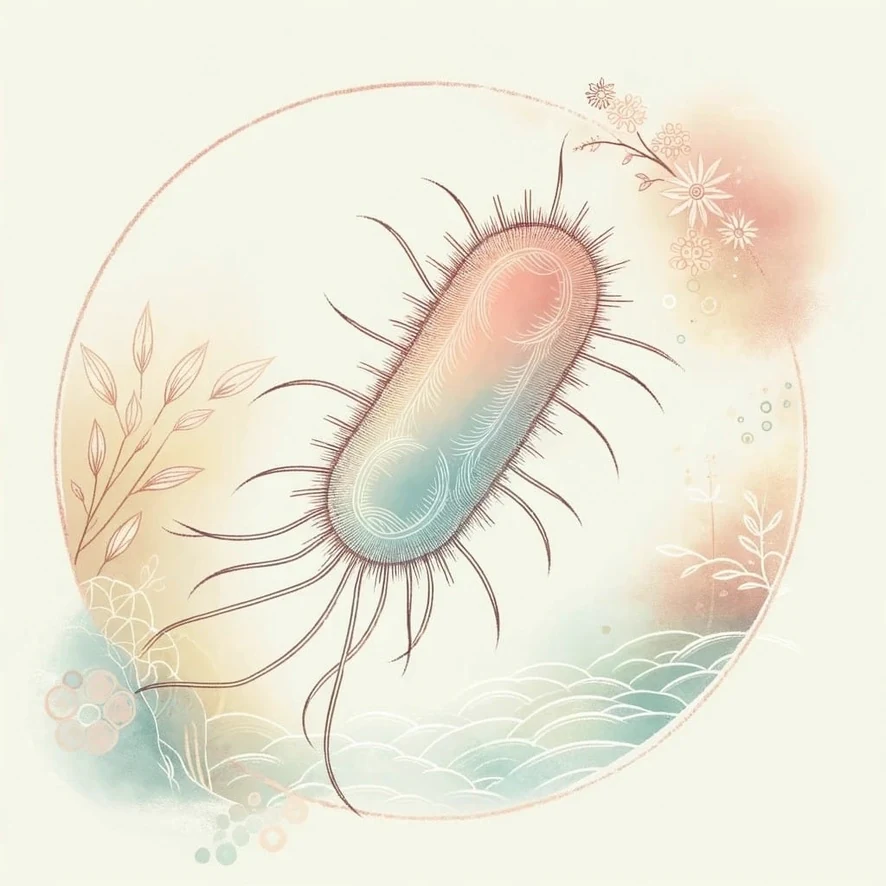
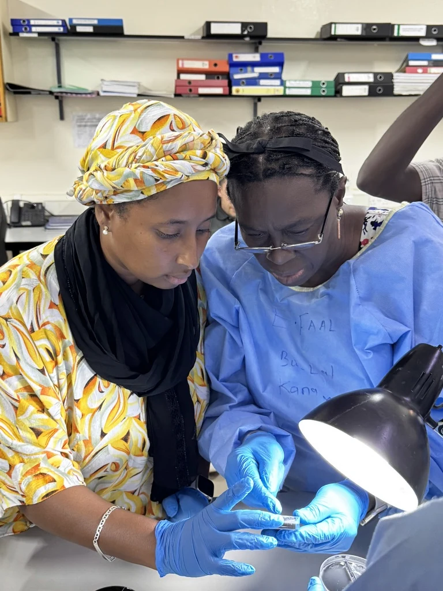
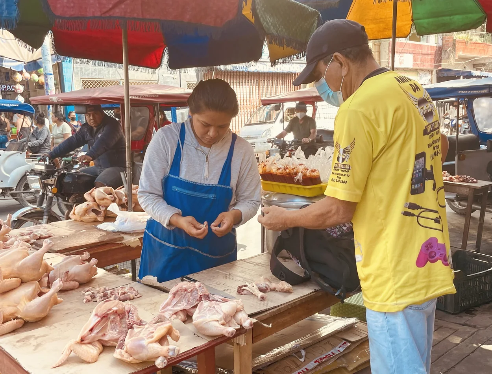
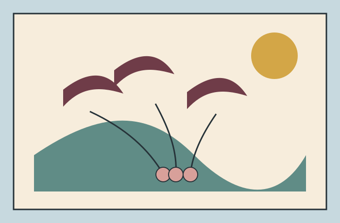

Sampling an interconnected One Health system
Why credible source attribution begins with people, environments and study design—not with an algorithm.
Read →Population genomics, epidemiology and AI to study transmission, antimicrobial resistance and disease across human, animal and environmental systems.
University of Oxford · Ineos Oxford Institute for Antimicrobial Research

Research themes
Flagship projects

GETcampy and the Campylobacter Control Campaign combine One Health sampling, genomics, modelling and prevention across African study sites.
Project overview →
Longitudinal epidemiology and population genomics of childhood infection, asymptomatic carriage and antimicrobial resistance.
Project overview →
Long-term work on bacterial transmission, antimicrobial resistance and host adaptation across poultry, pigs, food and people.
Project overview →
Metagenomics of microbial communities and resistance across migratory birds, poultry and human-influenced environments.
Project overview →Recent publication
BMJ Open · 2026
A shared framework for coordinated One Health sampling, microbiology, sequencing and analysis across African study settings.
Recent story
Why credible source attribution begins with people, environments and study design—not with an algorithm.
Read →People
Co-supervised with Sam Sheppard
Studies the (meta)genomics of Campylobacter in low- and middle-income settings, including source-associated variation and antimicrobial resistance.
Profile →Co-supervised with Sam Sheppard and Paul Keim
Investigates bacterial species boundaries, homologous recombination and the emergence of traits between Campylobacter jejuni and Campylobacter coli.
Profile →Co-supervised with Jahangir Hossain and Ozan Gundogdu
Works on genomic epidemiology and source attribution of enteric bacteria in The Gambia through GETcampy and the Campylobacter Control Campaign.
Profile →Global network
Explore project hubs, study settings, training links and long-term research partnerships.
Open the network mapOpen resources
Find laboratory procedures, genomic workflows, project websites and reusable analytical tools.
Browse resources